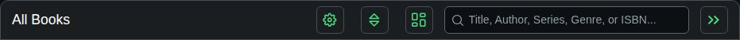
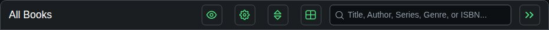
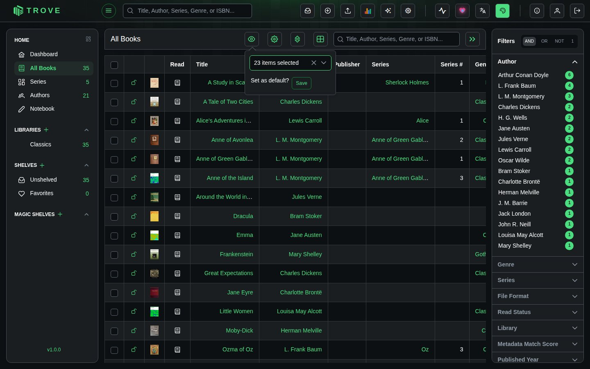
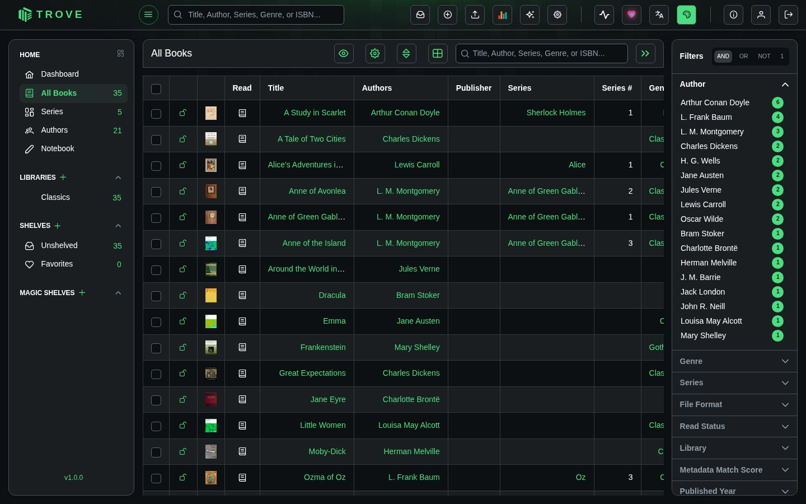
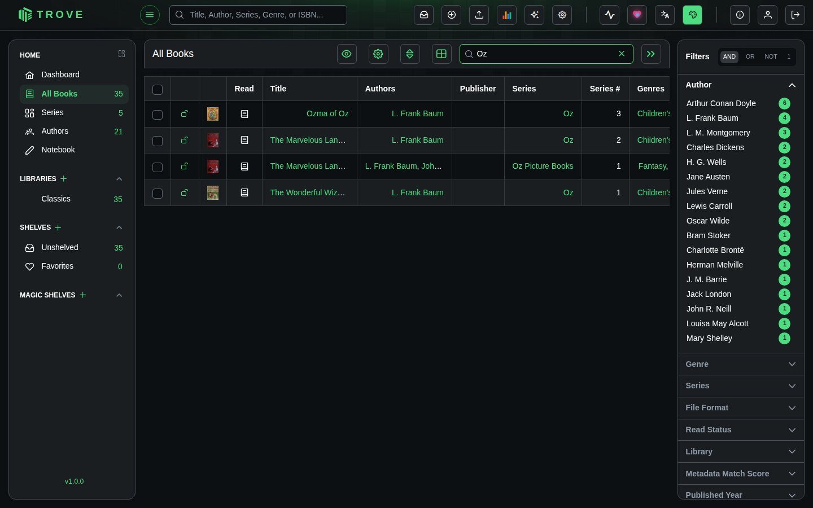
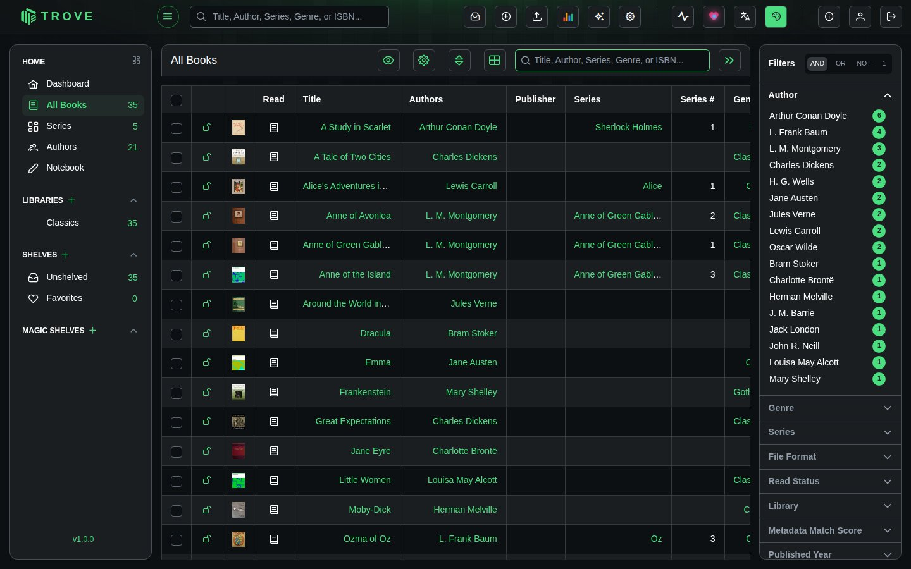
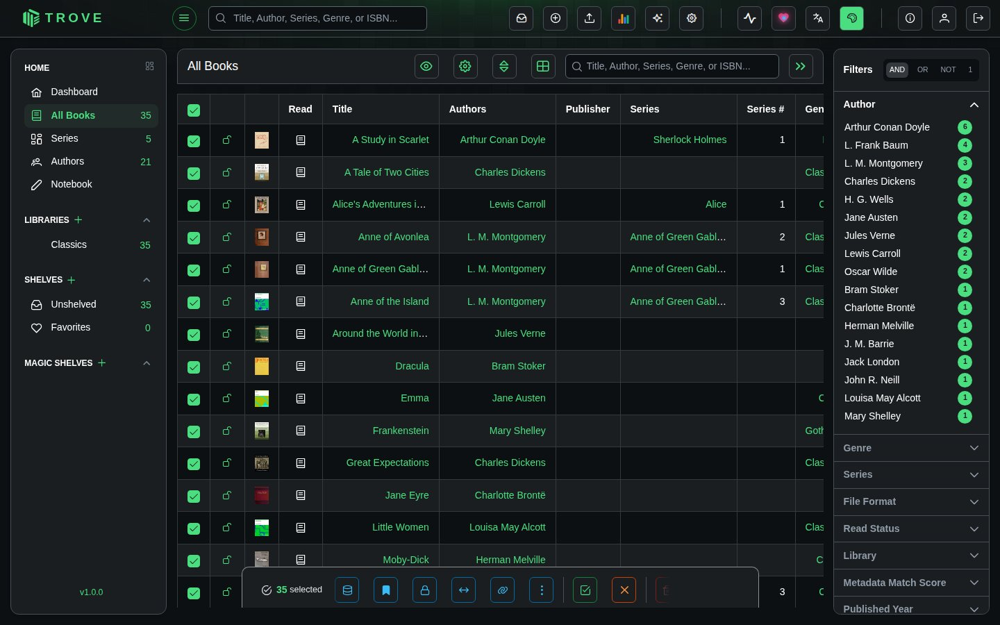
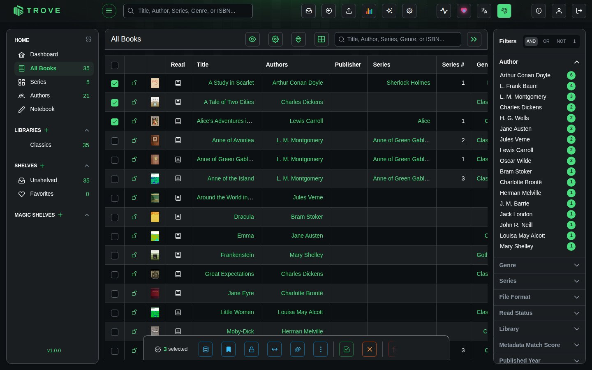
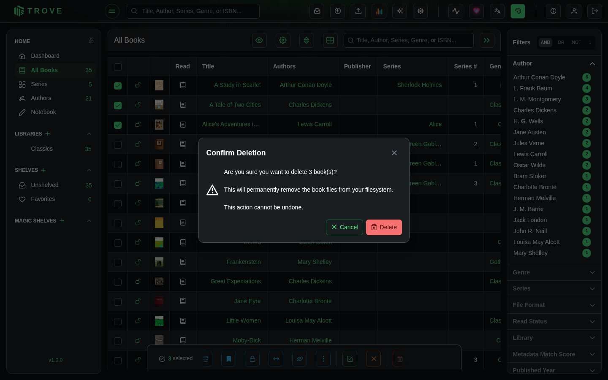

Table view
The table view lists books in rows and columns, which is quicker than covers for scanning a large library, comparing details, or selecting many books at once.
Switching views
The grid/table button in the toolbar switches between the two. Its icon shows the view you'll switch to.


Choosing columns
The eye button lists the columns; tick the ones you want. Your choice is remembered.

Columns: read status, title, authors, publisher, series and number, genres, published date, last read, date added, file name, file size, language, ISBN, ASIN, pages, and ratings and review counts from Amazon, Goodreads, Hardcover and RanobeDB.
Sorting
Click a column heading to sort by it, and again to reverse. The sort button in the toolbar works as in the grid view, for sorting by several fields.

Search and filters
The search box and the filter sidebar work exactly as in the grid view, including the AND, OR and NOT modes.


Selecting books
Tick the boxes beside books, or the box in the header to select every book in view. The bar at the bottom offers the same actions as in the grid view.

Deleting books
Select the books and click the bin in the action bar.

Trove asks you to confirm, and says how many books will go.
